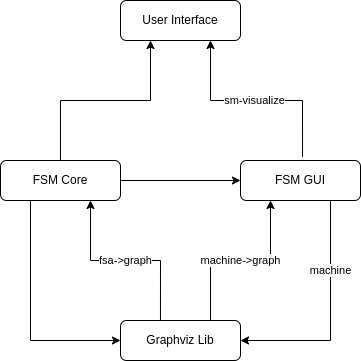
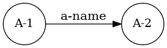
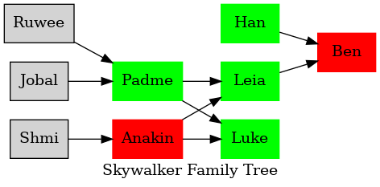
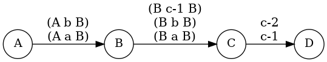
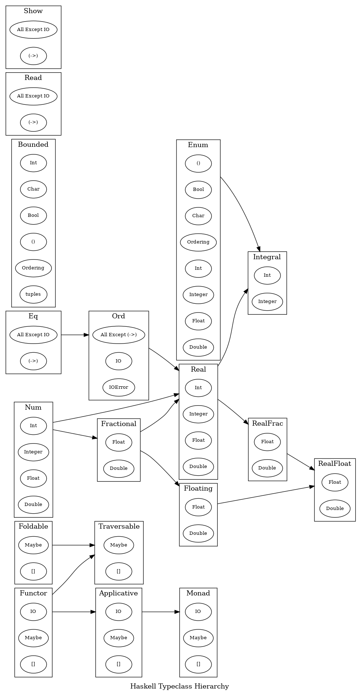

1 FSM Graphviz Library
| (require "interface.rkt") | package: fsm |
A library for creating Graphviz graphs that can be converted to the Dot Language or supported image types.
1.1 Overall Design
The graphviz library is designed to be its own entity. This means that both fsm-core and fsm-gui can work without the graphviz library. Below is a diagram of how the library interfaces with the rest of fsm.

1.2 Library Functions
Below are all the exported library functions from "interface.rkt".
1.2.1 Creating Graphs
procedure
(create-graph name [ #:fmtrs custom-formatters #:atb graph-attributes]) → graph? name : string? custom-formatters : formatters? = DEFAULT-FORMATTERS
graph-attributes : (hash/c symbol? any/c) = (hash 'rankdir "LR")
graph-attributes are a hash where the key is a symbol representing a graph attribute and the value is the value for that attribute.
(define (DEFAULT-EDGE-LABEL-FMTR lst) (string-join (map (lambda (v) (format "~a" v)) (reverse lst)) ", ")) (formatters (hash) (hash) (hash 'label DEFAULT-EDGE-LABEL-FMTR))
procedure
(create-subgraph [ #:name name #:atb subgraph-attributes]) → (or/c graph? subgraph?) name : symbol? = null subgraph-attributes : (hash/c symbol? any/c) = (hash)
See Dealing with Subgraphs for an example of using subgraphs.
If you are going to have edges between clusters you need to add the following on the subgraph attributes:
name is the name of the subgraph. If the name is not provided then an anonymous subgraph is created. If the name starts with cluster then a subgraph cluster is created. For more information on subgraphs see Subgraphs and Clusters.
subgraph-attributes are a hash where the key is a symbol representing a graph attribute or cluster attribute (if the subgraph is a cluster) and the value is the value for that attribute.
procedure
→ (or/c graph? subgraph?) parent : (or/c graph? subgraph?) name : symbol? node-attributes : (hash/c symbol? any/c) = DEFAULT-NODE
procedure
(add-nodes parent names [ #:atb node-attributes]) → (or/c graph? subgraph?) parent : (or/c graph? subgraph?) names : (listof symbol?) node-attributes : (hash/c symbol? any/c) = DEFAULT-NODE
procedure
(add-edge parent value start-node end-node [ #:atb edge-attributes]) → (or/c graph? subgraph?) parent : (or/c graph? subgraph?) value : any/c start-node : symbol? end-node : symbol? edge-attributes : (hash/c symbol? any/c) = (hash 'fontsize 15)
Note: Since the DOT language does not allow "-" characters in node names the dashes are omitted, but are still provided for the label.
edge-attributes are a hash where the key is a symbol representing a edge attribute and the value is the value for that attribute.
procedure
(add-edges parent edges [ #:atb edge-attributes]) → (or/c graph? subgraph?) parent : (or/c graph? subgraph?) edges : (listof (list/c symbol? any/c symbol?)) edge-attributes : (hash/c symbol? any/c) = (hash 'fontsize 15)
edges is a list of triples with the structure (list start-node end-node value)
edge-attributes are a hash where the key is a symbol representing a edge attribute and the value is the value for that attribute. It is applied to every value in the list.
procedure
(add-subgraph parent subgraph) → (or/c graph? subgraph?)
parent : (or/c graph? subgraph?) subgraph : subgraph?
(define sg (create-subgraph #:name 'cluster1)) (add-subgraph (add-nodes (create-graph 'test) '(A B C D)) sg)
procedure
(graph->bitmap graph [ #:directory save-directory #:filename filename #:clean delete-files]) → image? graph : graph? save-directory : path? = "system tmp directory" filename : string? = "__tmp__" delete-files : boolean? = #t
When save-directory is not specified then the systems tmp directory is used if read and write permissions exist, otherwise it defaults to the current-directory.
When delete-files is false, then the generated ".dot" and ".png" files are not deleted.
(define my-graph (create-graph 'test)) ;; generate and cleanup files in the systems tmp directory using the default name (graph->bitmap my-graph) ;; generate and cleanup files in using specified directory and filename (graph->bitmap my-graph #:directory (current-directory) #:filename "test") ;; test.dot and test.png are not deleted (graph->bitmap my-graph #:filename "test" #:clean #f)
procedure
(graph->svg graph save-directory filename [ #:clean delete-files]) → path? graph : graph? save-directory : path? filename : string? delete-files : boolean? = #t
When delete-files is false the generated ".dot" file is deleted.
Note: In order for the function to work one must have the DOT Complier downloaded on their machine and have a link to the DOT executable on there PATH or have the binary saved in one of the searched directories (see Dealing with the DOT executable for more details).
procedure
(graph->png graph save-directory filename [ #:clean delete-files]) → path? graph : graph? save-directory : path? filename : string? delete-files : boolean? = #t
When delete-files is false the generated ".dot" file is deleted.
In order for the function to work one must have the DOT Complier downloaded on their machine and have a link to the DOT executable on there PATH.
procedure
(graph->dot graph save-directory filename) → path?
graph : graph? save-directory : path? filename : string?
procedure
(fsa->graph fsa color-blind-mode) → image?
fsa : fsa? color-blind-mode : (and/c (>= n 0) (<= n 2))
color-blind-mode is a integer between 0 and 2 that represents a different set of colors to be used for the image.
procedure
(machine->graph machine color-blind-mode current-rule current-state invariant-state) → image? machine : machine? color-blind-mode : (and/c (>= n 0) (<= n 2)) current-rule : (or/c symbol? boolean?) current-state : (or/c symbol? boolean?) invariant-state : (or/c 'pass 'fail 'none)
color-blind-mode is a integer between 0 and 2 that represents a different set of colors to be used for the image.
current-rule is the current rule to be highlighted. If #f is supplied then no rule is highlighted.
current-state is the current state that the machine is in. If #f is supplied then no state is highlighted.
invariant-state is a symbol representing is the invariant passed. If 'pass is supplied then the state is highlighted green. If 'fail is supplied then the state is highlighted red. If 'none is supplied then the state is not highlighted.
1.2.2 Custom Formatters
Formatters are ways for implementers to customize how attribute data is generated to DOT code. If a formatter is provided for an attribute then it is used anytime DOT code is generated for that attribute.
struct
(struct formatters (graph node edge))
graph : (hash/c symbol? (-> any/c string?)) node : (hash/c symbol? (-> any/c string?)) edge : (hash/c symbol? (-> any/c string?))
graph formatters to be applied to graph level attributes.
node formatters to be applied to node level attributes.
edge formatters to be applied to edge level attributes.
;; one-rule-per-line :: listof(string) -> string ;; prints 1 rule per line (define (one-rule-per-line rules) (string-join rules "\n")) (define graph-formatters (formatters (hash) ; graph level formatters (hash) ; node level formatters (hash 'label one-rule-per-line))) ; edge level formatters
procedure
(create-formatters [ #:graph graph-fmtrs #:node node-fmtrs #:edge edge-fmtrs]) → formatters? graph-fmtrs : (hash/c symbol? (-> any/c string?)) = (hash) node-fmtrs : (hash/c symbol? (-> any/c string?)) = (hash) edge-fmtrs : (hash/c symbol? (-> any/c string?)) = (hash)
;; one-rule-per-line :: listof(string) -> string ;; prints 1 rule per line (define (one-rule-per-line rules) (string-join rules "\n")) (define fmtrs (create-formatters #:edge (hash 'label one-rule-per-line)))
1.3 Dealing with the DOT executable
/bin
/usr/bin
/usr/local/bin
/opt/local/bin
/opt/homebrew/bin
procedure
(find-tmp-dir) → path?
1.4 Examples
Below are examples of how to use the library.
1.4.1 Creating Basic Graphs
(define init-graph (create-graph 'cgraph #:atb (hash 'rankdir "LR"))) (define nodes '(A-1 A-2)) (graph->bitmap (add-edge (foldr (lambda (name graph) (add-node graph name)) init-graph nodes) 'a-name 'A-1 'A-2) #:directory (current-directory) #:filename "test")

1.4.2 Adding Attributes
(struct character (name mother father side)) ;; character->node :: character -> graph ;; adds a character to the graph (define (character->node c g) (add-node g (character-name c) #:atb (hash 'color (match (character-side c) ['light 'green] ['dark 'red] ['unknown ""]) 'shape 'box 'style 'filled))) ;; character->edge :: character -> graph ;; adds an edge to the graph (define (character->edge c g) (match (cons (character-father c) (character-mother c)) [(cons 'unknown 'unknown) g] [(cons 'unknown mother) (add-edge g "" mother (character-name c))] [(cons father 'unknown) (add-edge g "" father (character-name c))] [(cons father mother) (add-edge (add-edge g "" father (character-name c)) "" mother (character-name c))])) (define skywalkers (list (character 'Shmi 'unknown 'unknown 'unknown) (character 'Anakin 'Shmi 'unknown 'dark) (character 'Ruwee 'unknown 'unknown 'unknown) (character 'Jobal 'unknown 'unknown 'unknown) (character 'Padme 'Jobal 'Ruwee 'light) (character 'Luke 'Padme 'Anakin 'light) (character 'Leia 'Padme 'Anakin 'light) (character 'Han 'unknown 'unknown 'light) (character 'Ben 'Leia 'Han 'dark))) (define init-graph (create-graph 'test #:atb (hash 'label "Skywalker Family Tree"))) (define graph-with-nodes (foldl character->node init-graph skywalkers)) (define graph-with-edges (foldl character->edge graph-with-nodes skywalkers)) (graph->bitmap graph-with-edges)

1.4.3 Creating Graphs with Formatters
#lang racket (require "interface.rkt") ;; one-rule-per-line :: listof(string) -> string ;; prints 1 rule per line (define (one-rule-per-line rules) (string-join rules "\n")) (define fmtrs (create-formatters #:edge (hash 'label one-rule-per-line))) (graph->bitmap (add-edges (add-nodes (create-graph 'test #:fmtrs fmtrs) '(A B C D)) '((A "(A a B)" B) (A "(A b B)" B) (B "(B a B)" C) (B "(B b B)" C) (B "(B c-1 B)" C) (C "c-1" D) (C "c-2" D))))

1.4.4 Using Complex Data for Edges
#lang racket (require "interface.rkt") ;; one-rule-per-line :: listof(rules) -> string ;; prints 1 rule per line (define (one-rule-per-line rules) (define string-rules (map (curry format "~a") rules)) (string-join rules "\n")) (define fmtrs (create-formatters #:edge (hash 'label one-rule-per-line))) (graph->bitmap (add-edges (add-nodes (create-graph 'test #:fmtrs fmtrs) '(A B C D)) '((A (A a B) B) (A (A b B) B) (B (B a B) C) (B (B b B) C) (B (B c-1 B) C) (C c-1 D) (C c-2 D))))
1.4.5 Dealing with Subgraphs
;; name: symbol ;; types: listof(symbol) ;; childs: listof(symbol) (struct typeclass (name types childs)) ;; subgraph-name: string -> string ;; Creates a subgraph cluster name by appending `cluster` (define (subgraph-name s) (string->symbol (string-append "cluster" (symbol->string s)))) ;; typeclass->subgraph: typeclass -> subgraph ;; Creates a subgraph for the typeclass and appends the `types` as nodes (define (typeclass->subgraph tc) (foldr (lambda (n g) (add-node g (gensym) #:atb(hash 'label n 'fontsize 10))) (create-subgraph #:name (subgraph-name (typeclass-name tc)) #:atb (hash 'label (typeclass-name tc))) (typeclass-types tc))) ;; typeclass-edges: typeclass -> listof(string string string) ;; creates a list of edges of the form: `(from label to)` (define (typeclass-edges tc) (define (fmt-edge v) (list (subgraph-name (typeclass-name tc)) "" (subgraph-name v))) (map fmt-edge (typeclass-childs tc))) (define data (list (typeclass 'Eq '(|All Except IO| |(->)|) '(Ord)) (typeclass 'Show '(|All Except IO| |(->)|) null) (typeclass 'Read '(|All Except IO| |(->)|) null) (typeclass 'Ord '(|All Except (->)| IO IOError) '(Real)) (typeclass 'Num '(Int Integer Float Double) '(Real Fractional)) (typeclass 'Bounded '(Int Char Bool |()| Ordering tuples) null) (typeclass 'Enum '(|()| Bool Char Ordering Int Integer Float Double) '(Integral)) (typeclass 'Real '(Int Integer Float Double) '(RealFrac Integral)) (typeclass 'Fractional '(Float Double) '(Floating Real)) (typeclass 'Integral '(Int Integer) null) (typeclass 'RealFrac '(Float Double) '(RealFloat)) (typeclass 'Floating '(Float Double) '(RealFloat)) (typeclass 'RealFloat '(Float Double) null) (typeclass 'Functor '(IO Maybe |[]|) '(Applicative Traversable)) (typeclass 'Applicative '(IO Maybe |[]|) '(Monad)) (typeclass 'Foldable '(Maybe |[]|) '(Traversable)) (typeclass 'Monad '(IO Maybe |[]|) null) (typeclass 'Traversable '(Maybe |[]|) null))) ;; Create the initial graph (define init-graph (create-graph 'typeclasses #:atb(hash 'compound true 'label "Haskell Typeclass Hierarchy"))) ;; Add the subgraphs, nodes, and edges to the graph. Then render the image (graph->bitmap (add-edges (foldl (lambda (tc g) (add-subgraph g (typeclass->subgraph tc))) init-graph data) #:atb (hash 'minlen 2) (append-map typeclass-edges data)))
